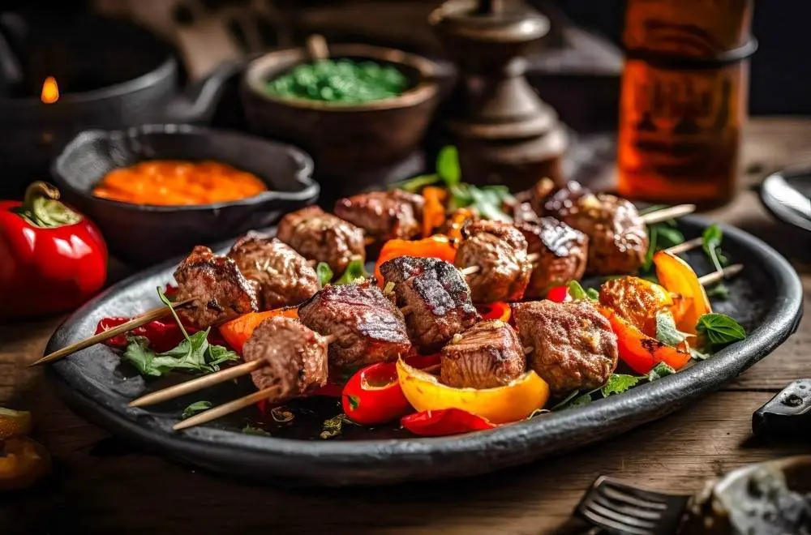

<!--Creating website about georgian food-->

<!--Creating header tag georgian dishes-->

<h1>Top 3 Georgian Dishes</h1>


<!--crating header tag khinkali-->
<h3>Top 1 <br> Khinkali/ხინკალი</h3>

<!--adding image xinkali-->

<br>

<a href="https://georgianrecipes.net/2013/03/29/khinkali/">See Recipe</a> <br><br>

<h3>Top 2 <br>Khachapuri/ხაჭაპური</h3>

<br>

<a href="https://www.kingarthurbaking.com/recipes/khachapuri-georgian-cheese-bread-recipe">See Recipe</a><br><br>

<h3>Top 3 <br> Mtsvadi/მწვადი</h3>

<br>

<a href="https://winedharma.com/en/recipe/authentic-mtsvadi-recipe-the-historic-georgian-bbq-delight-unveiled/">See Recipe</a>


